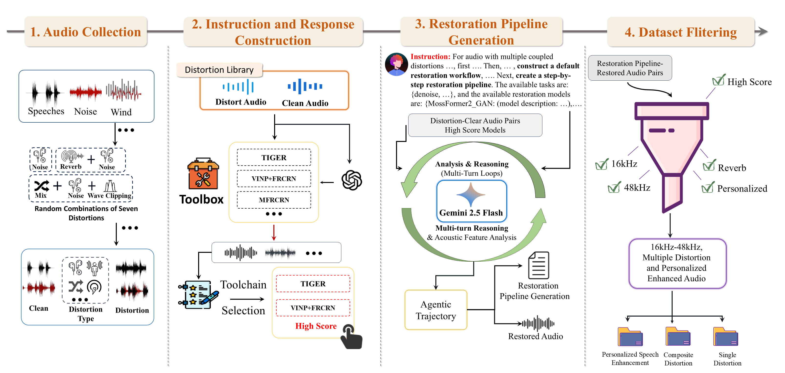
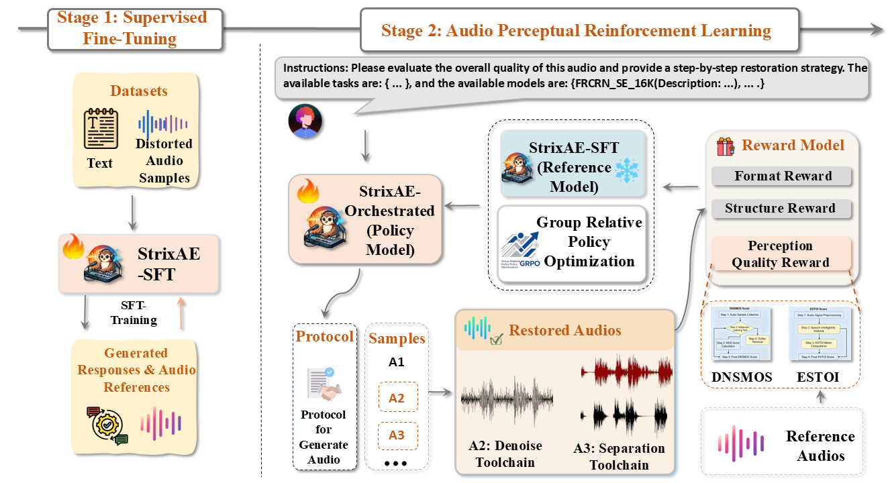
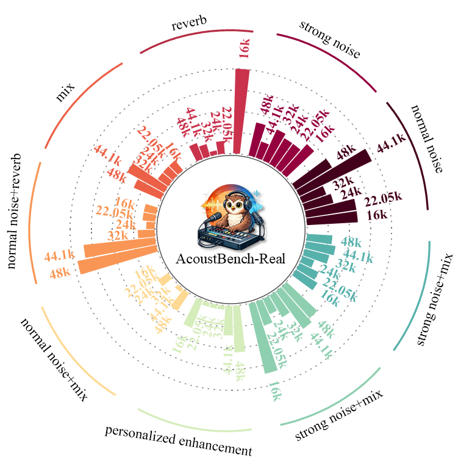

Abstract
Audio enhancement in real-world scenarios involves complex distortion couplings and requires personalized enhancement. Existing solutions struggle to address both simultaneously. To improve robustness andenable autonomous operation in such scenarios, we propose StrixAE, an agent based on a multimodal large language model (MLLM). StrixAE leverages the MLLM as a controller to coordinate multiple audio enhancement and personaliza-tion models. To further enhance system robustness, reduce artifacts, and improve generalization across diverse real-world scenarios, StrixAE is trained through a two-stage process: first, CoT supervised fine-tuning on AcoustBench to ground basic reasoning and tool invocation; second, Audio Perception Reinforcement Learning (APRL) — a reward design specifi- cally tailored for audio restoration pipelines that jointly optimizes format validity, structural coherence, and perceptual quality. Unlike generic RL fine-tuning, APRL introduces structured rewards that enforce executable pipelines and logical section ordering, enabling the agent to produce reliable, interpretable enhancement plans without hallucinated tools. Based on real-world test datasets, our proposed method outperforms most existing open-source and proprietary solutions, achieving state- of-the-art performance across multiple perception metrics and demonstrating strong generalization robustness.

(b) Data Selection Pipeline for StrixAE

(a) Overall Pipeline of StrixAE

(c) AcoustBench Testset Distribution
Results on Four Datasets